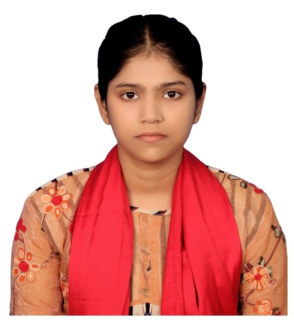

As a truly motivated and high-achieving student with a strong foundation in science, I am seeking an opportunity to pursue an undergraduate degree in engineering through the prestigious Indian Council for Cultural Relations (ICCR) scholarship. With a consistent record of academic excellence, particularly in mathematics, physics, and chemistry, I am eager to apply my analytical thinking, curiosity, and problem-solving skills to contribute meaningfully in the field of engineering. My goal is to pursue a globally competitive education that will equip me to become a future-ready engineer, committed to driving innovation, advancing sustainable solutions, and contributing meaningfully to societal progress.
Board: Rajshahi | GPA: 5.00/5.00 | Grade: A+
Avg. Marks in Higher Mathematics, Physics, and Chemistry: 93.83%
Board: Rajshahi | GPA: 5.00/5.00 | Grade: A+
Avg. Marks in Mathematics, Higher Mathematics, Physics, and Chemistry: 98.25%
C Programming, HTML (HyperText Markup Language)
Flowcharts and Algorithms
Self-motivated, Time Management, Critical Thinking, Teamwork, Adaptability, Leadership
The Physics 1st Paper covers: Vectors, linear motion, two-dimensional motion, laws of motion, laws of rotational motion, work, power and energy, gravitation, simple harmonic motion, elasticity, fluids, heat and gas, temperature, first law of thermodynamics, heat radiation, change of state, second law of thermodynamics, wave and sound, velocity of sound. The Physics 2nd Paper covers: electrostatics, the flow of electricity and electric circuits, the thermal and chemical effects of current, the magnetic effects of current, electromagnetic induction and alternating current, electromagnetic waves, reflection of light, refraction of light, optical instruments, wave theory of light, electron and photon, atom, electronics, theory of relativity and astrophysics.
The mathematics course includes: set theory, functions and relations, quadratic equations, matrices and determinants, permutation and combination, binomial theorem, vector algebra, coordinate geometry, trigonometry, and basic calculus. Higher Mathematics extends these foundations with advanced topics such as mathematical logic, complex numbers, polynomial equations, inequalities, sequences and series, advanced calculus of integrals and derivatives, differential equations, and applications of calculus to geometry and mechanics.
The Chemistry 1st Paper syllabus includes a comprehensive foundation in fundamental concepts of inorganic and physical chemistry: atomic structure, the periodic table, states of matter, thermodynamics, chemical equilibrium, and electrochemistry. The Chemistry 2nd paper includes environmental chemistry, exploring chemical bonding, reaction kinetics, thermochemistry, and concludes with nuclear chemistry.
World and Bangladesh Perspective, Communication Systems and Networking, Number Systems and Digital Devices, Introduction to Web Design and HTML, C Programming Language, and Database Management System.